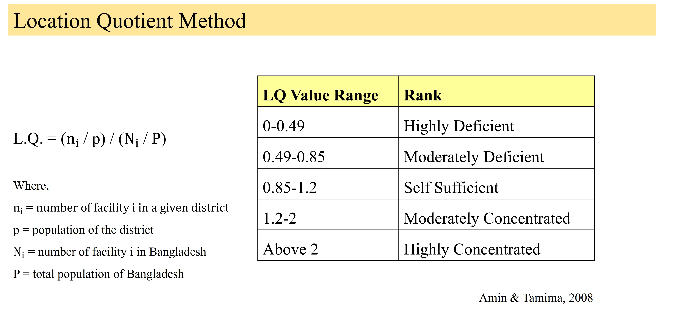
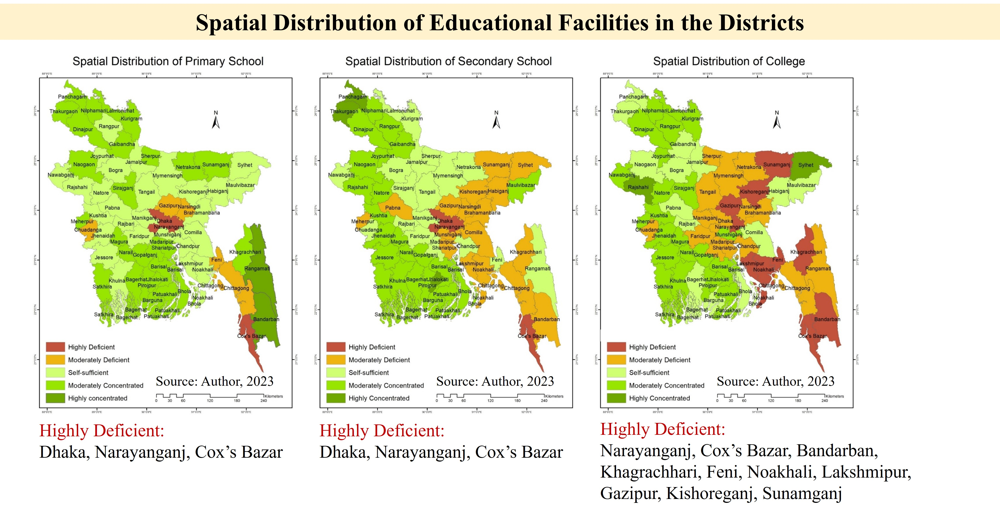
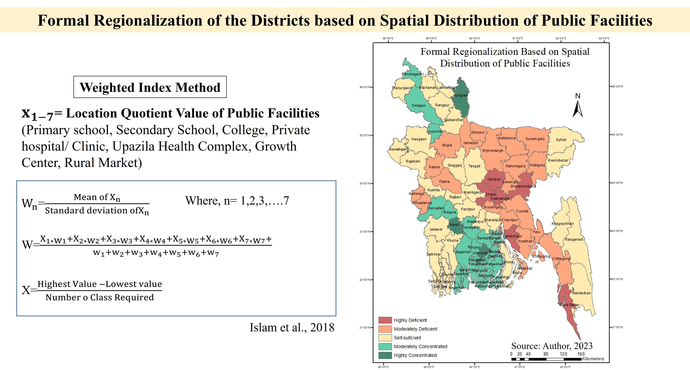
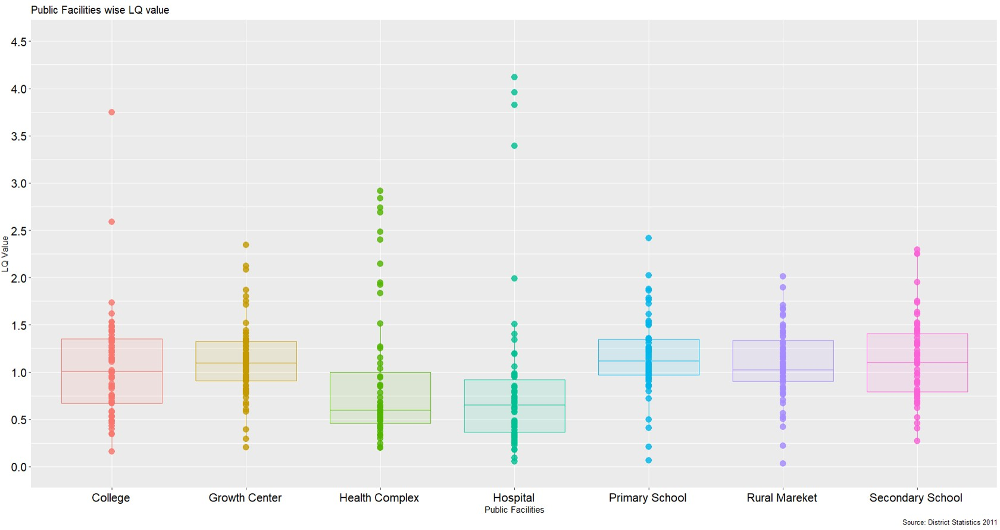
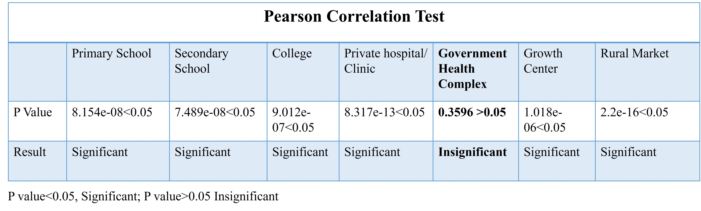
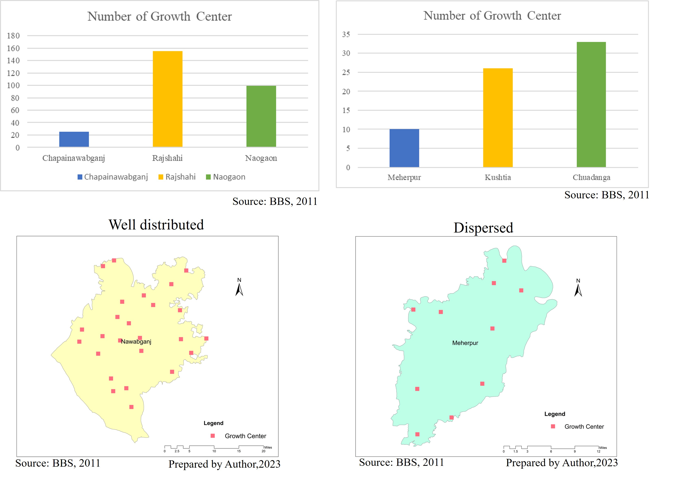
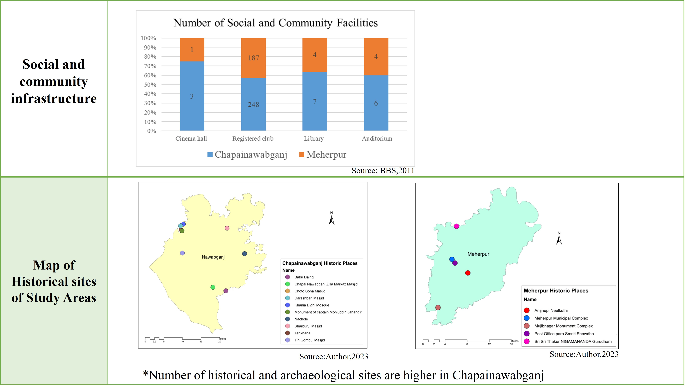
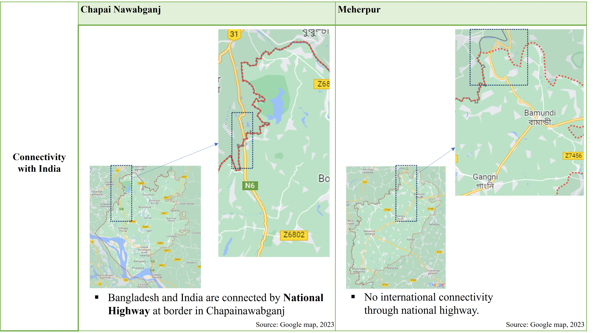

🎯 Objective
- To assess the regional economic growth of selected districts based on the shift share components.
- To examine the effect of the selected economic sectors on the regional growth based on shift share components.
- To find out the possible reason of positive and negative value of the shift share components.
Project Report
Project Presentation
📊 Result


Lagging and Leading Industries in the Regions

Inter Regional Analysis
🎯 Objective:
- To find out the HDI index for all the districts of Bangladesh.
- To compare and highlight the human development levels among all the districts across the country.
- To explore the possible reasons of backward and developed regions based on the parameters of the HDI.
Project Report
Project Presentation
Methodology

📊 Result
Formal Region Delineation


Rank of Divisions based on HDI Value

🎯 Objective: To explore the spatial concentration of public facilities, which include primary and secondary schools, colleges, hospitals, growth centers and rural markets in the districts of Bangladesh as well as delineate the regions that have deficiency and concentration of the facilities.
Project Report
Project Presentation
Location Quotient Method

📊 Result
Spatial Distribution of Educational Facilities

Formal Regionalization based on Spatial Distribution of Public Facilities

Gini Index

Box Plot

Pearson Correlation Test

Ranking of Districts based on LQ Value


🎯 Objective:
- To identify and analyze the factors which influence the larger and smaller catchment area of the selected districts of Bangladesh.
- To explore the interrelationship among the factors influencing the catchment area of the selected districts.
Project Report
Project Presentation
📊 Result
Location of the Study Area

Geographic Position

Economic Situation

Number of Growth Centers in the Study Area

Number of Historic Sites in the Study Area

Transportation Infrastructures in the Study Area

Connectivity with Neighbouring Country
